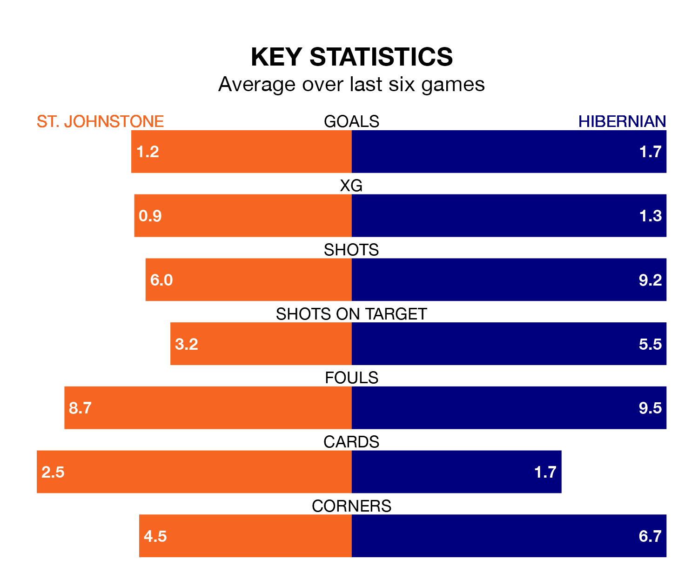

Hibernian travel to St. Johnstone on Saturday in the Premiership.
The visitors come into the game on the back of a draw in their last match, having tied with Motherwell 1-1 away, with a goal from Myziane Maolida.
The Saints, meanwhile, lost their last match, 2-0 against Kilmarnock.
In the last 10 years, St. Johnstone and Hibernian have played each other on 24 occasions. St. Johnstone won nine of them, Hibernian eight, and they drew seven times.
On average, the Saints scored 1.0 goals and Hibs 1.2 in those matches.
Their last meeting was on April 6, when St. Johnstone won 2-1 away.
With 24 goals in 33 games so far this season, St. Johnstone are the league's second-lowest scorers with 0.7 goals per game. And they are conceding more than average, letting in 46 goals at a rate of 1.4 per game.
Hibernian, meanwhile, are average scorers, with 1.3 goals per game. They have conceded 1.5 goals per game.
The Saints are 10th in the table after 33 games, of which they have won seven and drawn 10, earning 31 points.
Hibs are three places ahead of the hosts in seventh, with nine wins and 12 draws putting them on 39 points.
St. Johnstone are in mixed form in the Premiership, with two wins and a draw from their last six games.
With two wins and two draws over that period, the away side's form is slightly better – they have taken eight points from 18, compared to St. Johnstone's seven.
Updated: 15:40 (UTC), 18/04/24